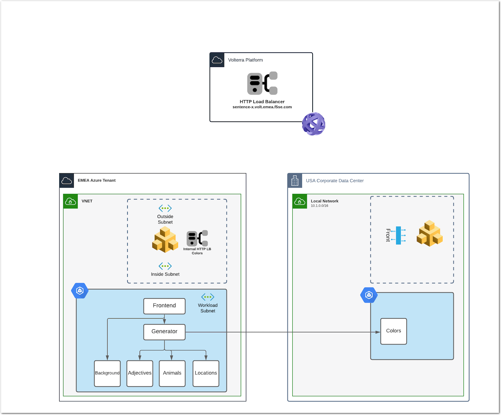

Workshop Volterra 10x > Class3 - Volterra Workshop for Modern App Specialists > Module 1 Source |
Lab 3 - Deploy Colors microservice on premises and expose it¶
Deploy Colors on private on-premises AKS¶
In UDF, connect to
Jumphost(SSHprefered, if you selectWEB SHELL, move to folder /home/ubuntu) and run the Colors microservice manifest to deploy it into the private k8s. In order to test cross namespace service publication, we will deploy Colors service inapinamespace.kubectl create ns api kubectl apply -f /home/ubuntu/k8s-deployment/aks-sentence-colors.yaml -n api
Note
As you can notice, the Colors microservice is published as a NodePort
Configure the private VolteNode in UDF¶
Note
In this location (UDF), the Voltnode will be deployed as Single NIC.
- Connect to the Volterra Node UI (admin/Volterra123)
- Do not change the password, go directly to
Dashboard - Click Configure Now
- If you haven’t created a site token in Volt Console, do it Now
- Fill all the fields as you want, but select
kvm-voltmesh(Single NIC) - Do not set any Latitude/Longitude, we will do it in the VoltConsole
- Save configuration
Warning
If nothing happens when you click SAVE, open the browser console, and check the error. Looks like there is a UI bug, and you need to check the box IP Settings Configuration.
- Come back to VoltConsole, and accept the registration. Add some coordonates (the ones you want)
Note
Wait for the node to be GREEN, upgrade the node if required.
Discover the Colors service¶
Create a service discovery
- Select your site, upload the kubeconfig file from the jumphost (/.kube/config)
- Select
Site Local Networkbecause the VoltNode is a single NIC node. - In
VIP Publishing Configuration settings, Don’t forget topublish fully qualified domain to VIP mapping
You should see
Colorsservice as a NodePort in the discovered services.
Note
This can take several minutes to discover services.
Expose the microservice with F5 Distributed Cloud¶
Create an Origin Pool targeting the discovered
Colorsservice- Type
k8s service - Service name : the service name discovered
- Site : your UDF site
- Tip : Select Outside Network
- Port 80

- Type
Create an Internal LB, so that the Generator can reach the Colors service
FYI, the generator targets this fqdn
sentence-colors.defaultNote
Team discussion: How does Generator pod in Azure AKS can find Colors service running in UDF k8S ?
Publish this LB on the
Azure Siteso that the AKS is updated with a new servicesentence-colors.defaultCheck you AKS services
❯ kubectl get services NAME TYPE CLUSTER-IP EXTERNAL-IP PORT(S) AGE kubernetes ClusterIP 10.0.0.1 <none> 443/TCP 4h25m sentence-adjectives ClusterIP 10.0.250.106 <none> 80/TCP 4h19m sentence-animals ClusterIP 10.0.14.187 <none> 80/TCP 4h19m sentence-backgrounds ClusterIP 10.0.52.39 <none> 80/TCP 4h19m sentence-colors ClusterIP None <none> 80/TCP 10m sentence-frontend-nginx NodePort 10.0.61.130 <none> 80:30202/TCP 4h19m sentence-generator ClusterIP 10.0.16.217 <none> 80/TCP 4h19m sentence-locations ClusterIP 10.0.59.8 <none> 80/TCP 4h19m ❯ kubectl describe svc sentence-colors Name: sentence-colors Namespace: default Labels: <none> Annotations: ves.io/discoveryCreator: 16d81643-3f37-4d6d-8009-8fa82d95484b Selector: <none> Type: ClusterIP IP Families: <none> IP: None IPs: None Port: 80 80/TCP TargetPort: 80/TCP Endpoints: 10.240.0.6:80 Session Affinity: None Events: <none>
Note
As you can notice, Volterra added a new service sentence-colors.default in AKS so that AKS knows this service is exposed by the Volterra Node (10.240.0.6). This LB routes traffic to the Origin Pool in UDF.